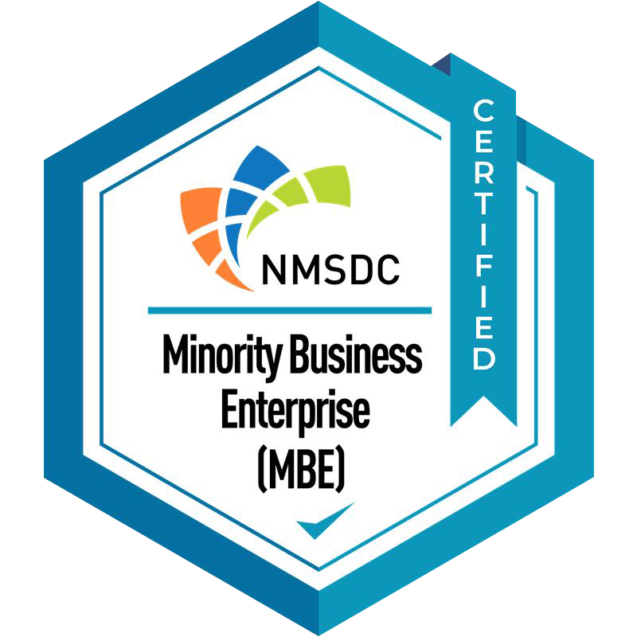

J&A Freight Systems is a certified Minority Business Enterprise (MBE). For corporations with supplier-diversity goals, that means every truckload, LTL shipment, container, and managed program you move with us can count toward your commitments, backed by 40 years of freight performance.

Supplier-diversity programs work best when the diverse supplier is also the best supplier. Transportation is one of the largest addressable spend categories in most manufacturing and distribution budgets, which makes an MBE-certified logistics partner one of the most effective ways to make progress on diversity commitments without creating a parallel vendor just for reporting.
J&A earns the freight first. We have served mid-market shippers across North America since 1986, maintain a network of roughly 200 vetted carrier partners, and run every shipment on a best-in-class Transportation Management System with live tracking and freight audit. The certification is a benefit of the relationship, not the reason for it.
Because the certification belongs to the company, every service line qualifies. Spend on a single truckload counts the same way as a fully managed transportation program.
Contract with J&A directly, or let your prime logistics provider report us as a Tier 2 diverse supplier. We support both.
Current NMSDC certificate, W-9, insurance, and authority documents delivered as one supplier packet.
Lane-level spend reports from our TMS make quarterly or annual diversity reporting straightforward.
97% on-time delivery and freight audit on every invoice, the same standard every J&A client receives.
Ask for our supplier-diversity packet. We send the NMSDC certificate and the onboarding documents your procurement team needs.
We complete your supplier portal registration and diversity attestations, and keep the certification current each year.
Begin with a single lane, a mode, or a region, or scope a managed transportation program from day one.
Spend reporting from our TMS supports your Tier 1 or Tier 2 diverse-spend reporting cycle.
MBE certification sits alongside the licenses and standards every J&A shipment carries.
What procurement and logistics teams ask us about the certification.
Yes. J&A Freight Systems, Inc. is certified as a Minority Business Enterprise (MBE) by the National Minority Supplier Development Council (NMSDC).
The National Minority Supplier Development Council certifies businesses that are at least 51% owned, operated, and controlled by U.S. citizens who are members of a minority group. Certification involves document review and a site visit, and it is renewed annually.
Most corporate supplier-diversity programs recognize NMSDC MBE certification for Tier 1 and Tier 2 diverse-spend reporting. Confirm the requirements of your specific program, and we will supply the certificate and any supplier forms you need.
All of them: full truckload, LTL, refrigerated, drayage, hazmat, warehouse, and managed transportation. The certification belongs to the company, not a single service line.
Use the contact form or call (773) 205-7720 and ask for our supplier-diversity packet. We will send the current NMSDC certificate along with W-9, insurance, and authority documents.
No. J&A competes on rate and service first. Supplier diversity is an added benefit of a partnership that already stands on 40 years of performance, a vetted carrier network, and a best-in-class TMS.
Request our supplier-diversity packet or a quote on your next lane. A dedicated J&A expert responds within one business day.